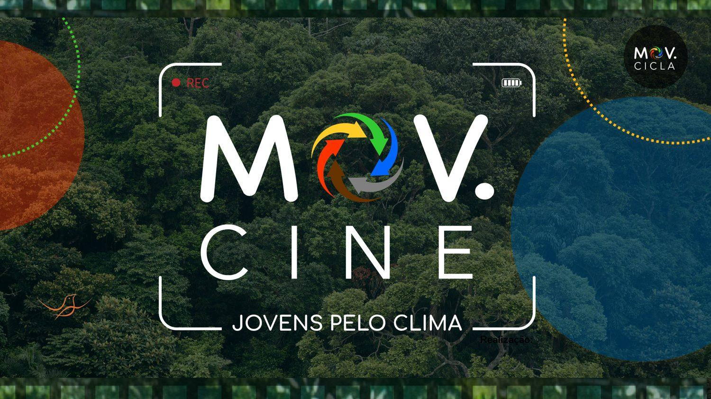
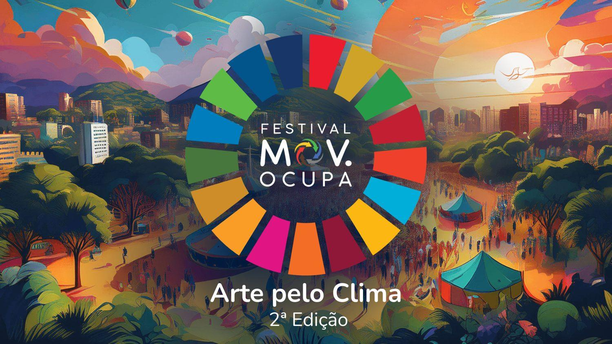
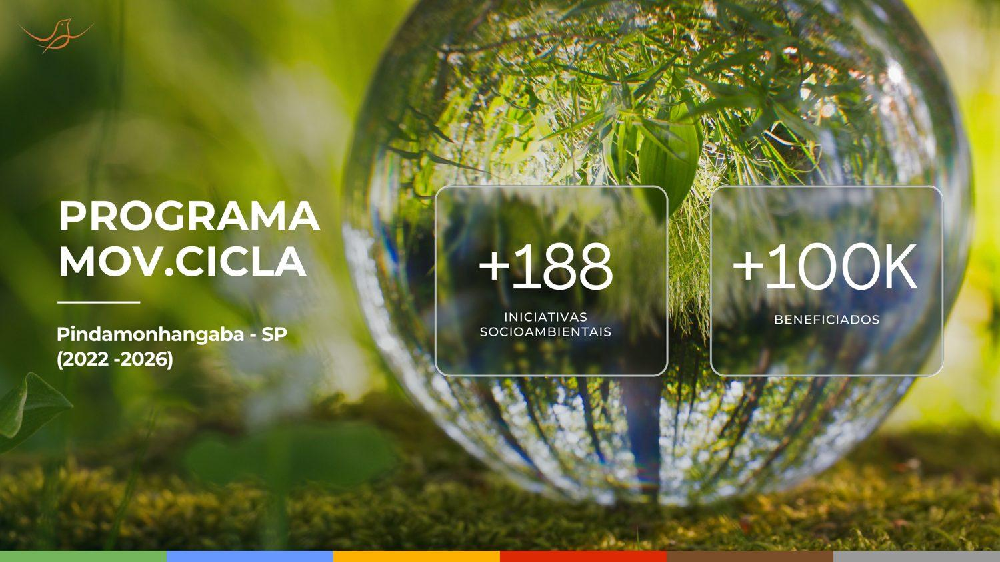
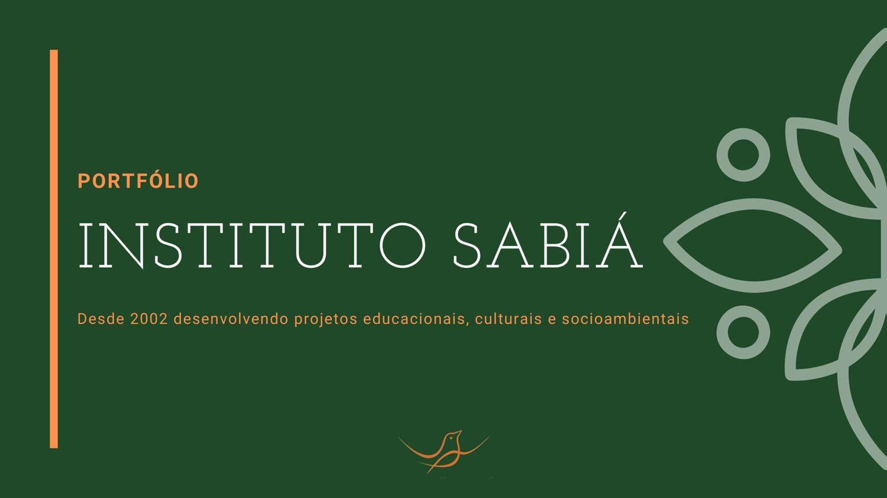
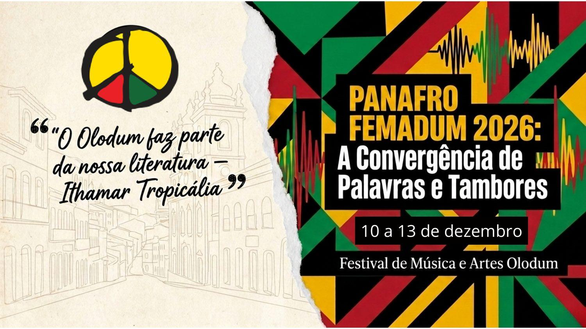

Para quem realiza↗
Proponentes
Institutos, organizações sociais, produtores culturais e entidades com iniciativas que precisam ganhar estrutura, clareza e caminhos de viabilização.
Quero desenvolver um projeto ↗Estratégia · Cultura · Transformação
Conectamos projetos, empresas e oportunidades para impulsionar iniciativas culturais, educacionais, esportivas e socioambientais.
01 / Quem somos
A Colore Cultural atua na conexão entre iniciativas transformadoras, organizações proponentes e empresas patrocinadoras.
Unimos visão estratégica, orientação técnica e articulação para apoiar projetos e aproximar oportunidades de investimento. Nosso olhar considera a força da cultura, da educação, do esporte e das iniciativas socioambientais no desenvolvimento das pessoas e dos territórios.
Conheça nossas frentesUma ponte entre dois mundos
Trabalhamos para aproximar necessidades, objetivos e oportunidades de forma estruturada.
Institutos, organizações sociais, produtores culturais e entidades com iniciativas que precisam ganhar estrutura, clareza e caminhos de viabilização.
Quero desenvolver um projeto ↗Empresas que buscam oportunidades alinhadas às suas prioridades institucionais, territoriais e de investimento social.
Quero conhecer oportunidades ↗02 / Como podemos atuar
Uma atuação organizada para compreender desafios, estruturar possibilidades e acompanhar caminhos de transformação.
Leitura inicial da organização ou iniciativa, identificação de necessidades e avaliação de caminhos possíveis para o desenvolvimento do projeto.
Apoio técnico à concepção, organização de informações, orçamento e preparação de documentação, conforme o escopo contratado e as regras aplicáveis.
Mapeamento e aproximação de oportunidades entre projetos e empresas com potencial interesse, respeitando critérios e prioridades de cada parte.
Apoio ao longo das etapas previstas, com organização de informações, orientação técnica e atenção aos compromissos definidos.
Os serviços, entregáveis, prazos e responsabilidades são definidos de acordo com cada projeto e formalizados em proposta específica.
Nossa essência
“Conectamos pessoas e oportunidades para impulsionar mudanças reais no mundo.”
03 / Cultura em movimento
Referências visuais e iniciativas presentes nos materiais compartilhados com a Colore. A participação e o papel institucional em cada projeto devem ser confirmados antes de qualquer divulgação como case.





Imagens utilizadas como referências fornecidas no material de estratégia. Marcas, nomes, resultados e relações institucionais dependem de autorização e validação dos respectivos responsáveis.
O que nos orienta
Cultura como direito
Valorizamos a cultura como força de desenvolvimento humano e coletivo.
Democratização do acesso
Buscamos ampliar oportunidades e valorizar diferentes realidades.
Ética e transparência
Atuamos com clareza sobre processos, responsabilidades e limites.
Respeito aos territórios
Reconhecemos histórias, identidades e comunidades como protagonistas.
Excelência no cuidado
Unimos atenção às pessoas e compromisso com entregas consistentes.
04 / Vamos conversar
Conte um pouco sobre sua iniciativa ou sobre as oportunidades que sua empresa deseja apoiar. A Colore pode ajudar a encontrar o próximo passo.